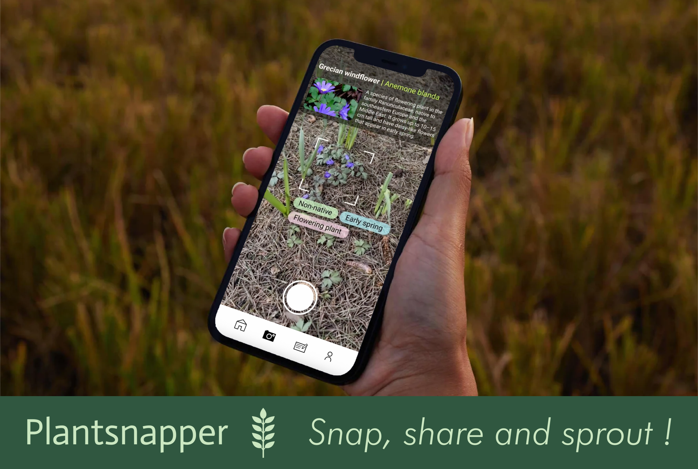

Projects

Plant Snapper
2025
A hands-free mobile app prototype that uses augmented reality and voice interactions to help hikers, gardeners, and nature enthusiasts identify plants, receive safety tips, and gain plant insights in real time.
- User Research
- Interaction Design
- Prototyping

Jazzdor Music Festival Graphical Experimentation
2024
Experimental visual design concepts for Jazzdor Music Festival, aiming to capture the improvisational nature of jazz and their audience.
- Graphic Design
- Identity
- Case Studies